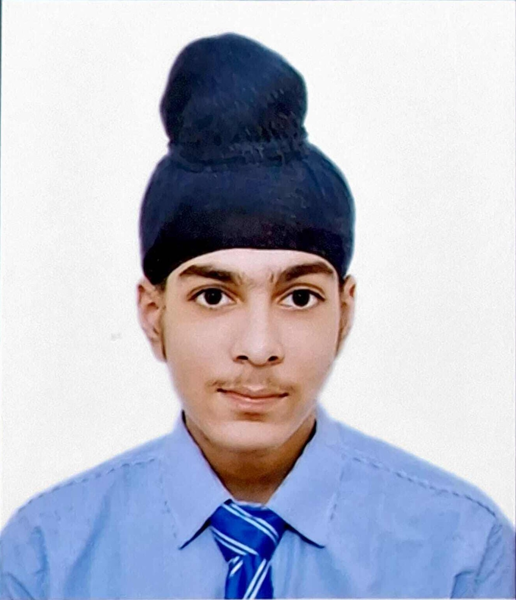

Motivated and detail-oriented Web Developer with hands-on experience in designing, building, and maintaining websites and web applications. Skilled in both front-end and back-end development, with a strong foundation in database management and AI integration. Known for quickly adapting to new technologies and delivering efficient, well-documented code.
Bachelor of Technology (B.Tech)
Computer Science and Engineering
Vellore Institute of Technology, Chennai
Expected Graduation: 2028
Web Developer Intern
XYZ Corp | June 2028 – October 2029
For more details or to connect with me, feel free to contact me or explore my hobbies.